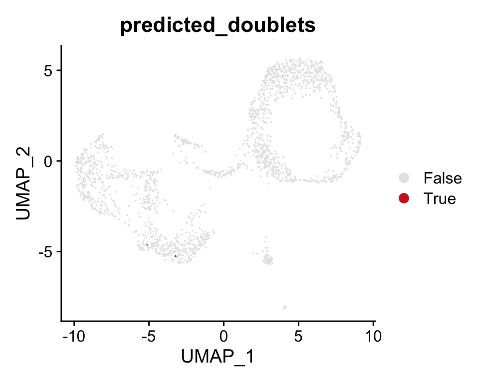

Jan_Vento-Tormo scRNAseq Reanalysis
Morgan Greene
2023-01-13
Last updated: 2023-01-13
Checks: 7 0
Knit directory: VTsc/
This reproducible R Markdown analysis was created with workflowr (version 1.7.0). The Checks tab describes the reproducibility checks that were applied when the results were created. The Past versions tab lists the development history.
Great! Since the R Markdown file has been committed to the Git repository, you know the exact version of the code that produced these results.
Great job! The global environment was empty. Objects defined in the global environment can affect the analysis in your R Markdown file in unknown ways. For reproduciblity it’s best to always run the code in an empty environment.
The command set.seed(20230113) was run prior to running
the code in the R Markdown file. Setting a seed ensures that any results
that rely on randomness, e.g. subsampling or permutations, are
reproducible.
Great job! Recording the operating system, R version, and package versions is critical for reproducibility.
Nice! There were no cached chunks for this analysis, so you can be confident that you successfully produced the results during this run.
Great job! Using relative paths to the files within your workflowr project makes it easier to run your code on other machines.
Great! You are using Git for version control. Tracking code development and connecting the code version to the results is critical for reproducibility.
The results in this page were generated with repository version 7da0329. See the Past versions tab to see a history of the changes made to the R Markdown and HTML files.
Note that you need to be careful to ensure that all relevant files for
the analysis have been committed to Git prior to generating the results
(you can use wflow_publish or
wflow_git_commit). workflowr only checks the R Markdown
file, but you know if there are other scripts or data files that it
depends on. Below is the status of the Git repository when the results
were generated:
Ignored files:
Ignored: .DS_Store
Ignored: .Rproj.user/
Untracked files:
Untracked: BuildWebsite.R
Note that any generated files, e.g. HTML, png, CSS, etc., are not included in this status report because it is ok for generated content to have uncommitted changes.
These are the previous versions of the repository in which changes were
made to the R Markdown (analysis/Jan_qc_VT881.Rmd) and HTML
(docs/Jan_qc_VT881.html) files. If you’ve configured a
remote Git repository (see ?wflow_git_remote), click on the
hyperlinks in the table below to view the files as they were in that
past version.
| File | Version | Author | Date | Message |
|---|---|---|---|---|
| Rmd | 7da0329 | meg3uab | 2023-01-13 | publish VTsc |
Reanalysis of individual D12 scRNAseq
Information is the following:
- Run Name: FCA7511881
- Organism part: Decidua
- FACS marker: CD45+
- Clinical information: 6-12 wks gestationDownstream Analysis
Load Required Packages
suppressPackageStartupMessages({
# Package names
packages <- c("devtools", "Seurat", "ggplot2", "tidyr", "patchwork", "SeuratData", "reshape2", "knitr", "SeuratWrappers", "dplyr", "hdf5r", "ape", "Rfast2", "RColorBrewer", "data.table", "tidyverse", "magrittr", "gridExtra", "cowplot", "Matrix", "reticulate", "monocle3", "WebGestaltR", "harmony", "MAST", "purrr", "usefun", "formattable", "splitstackshape", "formatR", "venn", "VennDiagram", "Hmisc", "interp", "SoupX", "DropletUtils", "writexl")
# Install packages not yet installed
installed_packages <- packages %in% rownames(installed.packages())
if (any(installed_packages == FALSE)) {
install.packages(packages[!installed_packages])
}
# Packages loading
invisible(lapply(packages, library, character.only = TRUE))
})We’ll start by assessing and removing ambient RNA in our dataset before proceeding with further downstream QC and analyses
Remove ambient RNA using SoupX
Dropseq scRNAseq assumes all acquired RNAs are endogenous to cells. However, any RNAs contained in the input droplet are also captured by these assays. Sequencing of cell free RNA creates background contamination that can confound the correct biological interpretation of sc transcriptomic data. Contamination from this “soup” of cell free RNAs is ubiquitous, experiment specific (in composition and magnitude), and can lead to erroneous biological conclusions. SoupX is a method used for quantifying the extent of the contamination and estimating “background corrected”, cell expression profiles that can be integrated with existing downstream analysis tools. soupX reduces batch effects, strengthens cell-specific quality control and improves biological interpretation
The method to do this consists of three parts:
1.Calculate the profile of the soup.
2.Estimate the cell specific contamination fraction.
3.Infer a corrected expression matrix.
Various approaches of estimating and removing soup contamination: https://cran.r-project.org/web/packages/SoupX/readme/README.html https://rawcdn.githack.com/constantAmateur/SoupX/204b602418df12e9fdb4b68775a8b486c6504fe4/inst/doc/pbmcTutorial.html
We use the automatic method to estimate the contamination fraction and decontaminate data. Leverages clustering information from cellranger.
sc1 = load10X("/Volumes/Porrett2/Morgan_G/Data_Analysis/scAnalysis/JAN_VTintegration/vt881_outs")
sc1 = autoEstCont(sc1)
out1 = adjustCounts(sc1)
DropletUtils:::write10xCounts("/Volumes/Porrett2/Morgan_G/Data_Analysis/scAnalysis/JAN_VTintegration/vt881_outs/vt881_soupX_filtered", out1) #we shall use results from this runLoad soupX_Filtered Data
Load in soupX_Filtered data and filter the filtered_feature_bc_matrix data object based on the soupX corrected data.
Note that the RNA assay in filtered_feature_bc_matrix should be the same as that in the soupX_Filtered object.
#Loading soupX filtered data
soupX_Filtered <- Read10X(data.dir = "/Volumes/Porrett2/Morgan_G/Data_Analysis/scAnalysis/JAN_VTintegration/vt881_outs/vt881_soupX_filtered")
str(soupX_Filtered)
Formal class 'dgCMatrix' [package "Matrix"] with 6 slots
..@ i : int [1:1294374] 73 113 143 170 208 492 513 521 524 559 ...
..@ p : int [1:1986] 0 586 1105 1794 3123 3886 4475 5022 6028 6939 ...
..@ Dim : int [1:2] 36601 1985
..@ Dimnames:List of 2
.. ..$ : chr [1:36601] "MIR1302-2HG" "FAM138A" "OR4F5" "AL627309.1" ...
.. ..$ : chr [1:1985] "AAACCTGCAGTGAGTG-1" "AAACCTGGTTCCACAA-1" "AAACCTGTCGAATGGG-1" "AAACGGGAGAAACGAG-1" ...
..@ x : num [1:1294374] 0.976 1.93 0.903 1.912 0.956 ...
..@ factors : list()
dim(soupX_Filtered)
[1] 36601 1985
dataDir <- '/Volumes/Porrett2/Morgan_G/Data_Analysis/scAnalysis/JAN_VTintegration/vt881_outs/filtered_feature_bc_matrix'
data <- Read10X(data.dir = dataDir)
str(data)
Formal class 'dgCMatrix' [package "Matrix"] with 6 slots
..@ i : int [1:1294374] 73 113 143 170 208 492 513 521 524 559 ...
..@ p : int [1:1986] 0 586 1105 1794 3123 3886 4475 5022 6028 6939 ...
..@ Dim : int [1:2] 36601 1985
..@ Dimnames:List of 2
.. ..$ : chr [1:36601] "MIR1302-2HG" "FAM138A" "OR4F5" "AL627309.1" ...
.. ..$ : chr [1:1985] "AAACCTGCAGTGAGTG-1" "AAACCTGGTTCCACAA-1" "AAACCTGTCGAATGGG-1" "AAACGGGAGAAACGAG-1" ...
..@ x : num [1:1294374] 1 2 1 2 1 1 1 1 8 1 ...
..@ factors : list()
dim(data)
[1] 36601 1985Dim result shows 2 numbers: features/genes & cells We have same dims but soupX filtered is corrected, so counts may be different
Next, check that all cells and genes are in both datasets and in the same order
soupX_fg <- as.data.frame(rownames(soupX_Filtered))
#all genes (row names) from filtered gene expression soupx, note that this object only has the RNA assay
soupX_Filtered_cells <- as.data.frame(colnames(soupX_Filtered))
#all cells (col names) from filtered gene expression soupx
data_genes <- as.data.frame(rownames(data))
#GEX (cellranger output)
data_cells <- as.data.frame(colnames(data))
#GEX (cellranger output)True or False: All soupX filtered genes/cells are in original output
all(soupX_fg %in% data_genes)
[1] TRUE
all(data_genes %in% soupX_fg)
[1] TRUE
all.equal(soupX_fg$`rownames(soupX_Filtered)`, data_genes$`rownames(data)`)
[1] TRUE
all(data_cells %in% soupX_Filtered_cells)
[1] TRUE
all(soupX_Filtered_cells %in% data_cells)
[1] TRUE
all.equal(soupX_Filtered_cells$`colnames(soupX_Filtered)`, data_cells$`colnames(data)`)
[1] TRUE
all.equal(data, soupX_Filtered)
[1] "Mean relative difference: 0.0401604"
#Because the genes and cells are the same, we will use the corrected soupX object instead of GEX assay,
mean(data)
[1] 0.0506286
mean(soupX_Filtered)
[1] 0.04860346
mean(rowMeans(soupX_Filtered))
[1] 0.04860346
#Replacing data RNA assay with the soupX_Filtered data
data <- soupX_Filtered
mean(data) #data mean should now equal soupX_Filtered mean
[1] 0.04860346Create a Seurat object for analysis
vt881_jan <- CreateSeuratObject(counts = data, min.cells = 3, min.features = 200)
Assays(vt881_jan)
An object of class "SimpleAssays"
Slot "data":
List of length 1
class(vt881_jan)
[1] "Seurat"
attr(,"package")
[1] "SeuratObject"
saveRDS(vt881_jan, "/Volumes/Porrett2/Morgan_G/Data_Analysis/scAnalysis/JAN_VTintegration/vt881_outs/vt881_soupX_filtered/vt881_jan_SeuratObj.rds")###Perform pre-processing and dimensional reduction.
Single-cell gene expression: scRNA-seq data is analysed using standard pipelines in Seurat which include normalization, feature selection, and dimensional reduction with PCA.
Quality Control (QC)
VT <- vt881_jan
#Specify which assay we are working with like so:
DefaultAssay(VT) <- 'RNA'
#Check if correct. Should be RNA
DefaultAssay(VT)
[1] "RNA"
#View Metadata
head(VT@meta.data)
orig.ident nCount_RNA nFeature_RNA
AAACCTGCAGTGAGTG-1 SeuratProject 1578.940 581
AAACCTGGTTCCACAA-1 SeuratProject 1127.927 516
AAACCTGTCGAATGGG-1 SeuratProject 1262.221 688
AAACGGGAGAAACGAG-1 SeuratProject 4013.532 1320
AAACGGGAGCACAGGT-1 SeuratProject 1811.964 749
AAACGGGTCTTAGCCC-1 SeuratProject 1324.290 585
#We'll store the percentage of reads that map to the mitochondrial genome in the metadata object as "percent.mt"
VT <- PercentageFeatureSet(VT, pattern = "^MT-", col.name = "percent.mt")
head(VT@meta.data)
orig.ident nCount_RNA nFeature_RNA percent.mt
AAACCTGCAGTGAGTG-1 SeuratProject 1578.940 581 1.28619991
AAACCTGGTTCCACAA-1 SeuratProject 1127.927 516 1.30040839
AAACCTGTCGAATGGG-1 SeuratProject 1262.221 688 2.66206470
AAACGGGAGAAACGAG-1 SeuratProject 4013.532 1320 0.07141299
AAACGGGAGCACAGGT-1 SeuratProject 1811.964 749 2.56947390
AAACGGGTCTTAGCCC-1 SeuratProject 1324.290 585 1.49176393
p1 <- VlnPlot(VT, features = c("nFeature_RNA"), ncol = 1) + theme_light(base_size = 14) + theme(legend.position = "none", plot.title = element_text(size = 14, face = "bold", hjust = 0.5))
p2 <- VlnPlot(VT, features = c("nCount_RNA"), ncol = 1) + theme_light(base_size = 14) + theme(legend.position = "none", plot.title = element_text(size = 14, face = "bold", hjust = 0.5))
p3 <- VlnPlot(VT, features = c("percent.mt"), ncol = 1) + theme_light(base_size = 14) + theme(legend.position = "none", plot.title = element_text(size = 14, face = "bold", hjust = 0.5))
grid.arrange(p1, p2, p3, ncol=3)Feature Scatter Plots: nFeature_RNA is the number of genes detected in each cell. nCount_RNA is the total number of molecules detected within a cell. The number above each plot denotes the correlations between x-axis and y-axis.
plot1 <- FeatureScatter(VT, feature1 = "nCount_RNA", feature2 = "percent.mt")
plot2 <- FeatureScatter(VT, feature1 = "nCount_RNA", feature2 = "nFeature_RNA")
plot1 + plot2Violin Plot of the data and distributions
orig.ident nCount_RNA nFeature_RNA percent.mt
1: SeuratProject 1578.940 581 1.286200
2: SeuratProject 1127.927 516 1.300408
3: SeuratProject 1262.221 688 2.662065Editing Metadata
metadata <- VT@meta.data
# Add cell IDs to metadata
metadata$cells <- rownames(metadata)
# Rename columns
metadata <- metadata %>%
dplyr::rename(nUMI = nCount_RNA,
nGene = nFeature_RNA)
unique(metadata$orig.ident)
[1] SeuratProject
Levels: SeuratProject
# Visualize the number of cells
metadata %>%
ggplot(aes(x=orig.ident, fill=orig.ident)) +
geom_bar(color = "gray80", fill = "gray80") +
theme_classic() +
theme(axis.text.x = element_text(angle = 45, vjust = 1, hjust=1)) +
theme(plot.title = element_text(hjust=0.5, face="bold")) +
ggtitle("NCells") + theme(legend.position = "none") +
theme(legend.position = "none") +
geom_text(stat='count', aes(label=..count..), vjust = 0.5)
Warning: The dot-dot notation (`..count..`) was deprecated in ggplot2 3.4.0.
ℹ Please use `after_stat(count)` instead.Number UMIs/molecules per cell
#Visualize the number UMIs/molecules per cell
metadata %>%
ggplot(aes(color=orig.ident, x=nUMI, fill= orig.ident)) +
geom_density(alpha = 0.3, color="gray70", fill="gray70") +
scale_x_log10() +
theme_classic() +
ylab("Cell density/UMI counts per cell") +
geom_vline(xintercept = 500) + theme(legend.position = "none")#The UMI counts per cell should generally be above 500, that is the low end of what we expect. If UMI counts are between 500-1000 counts, it is usable but the cells probably should have been sequenced more deeplyMore QC
counts <- Matrix(VT@assays$RNA@counts)
counts_per_cell <- Matrix::colSums(counts)
counts_per_gene <- Matrix::rowSums(counts)
genes_per_cell <- Matrix::colSums(counts>0) #count a gene only if it has non-zero reads mapped.
cells_per_gene <- Matrix::rowSums(counts>0) #only count cells where the gene is expressed
counts_per_cell <- as.data.frame(colSums(counts))
counts_per_gene <- as.data.frame(rowSums(counts))
genes_per_cell <- as.data.frame(colSums(counts>0))
cells_per_gene <- as.data.frame(rowSums(counts>0) )
colnames(counts_per_cell) <- "counts"
colnames(counts_per_gene) <- "counts"
colnames(genes_per_cell) <- "genes_per_cell"
colnames(cells_per_gene) <- "cells_per_gene"
df <- cbind(counts_per_cell, genes_per_cell)
ggplot(df, aes(x=counts, y=genes_per_cell)) + geom_point(color="gray30") + scale_y_continuous(trans='log10') + scale_x_continuous(trans='log10') + theme_light()#Plot cells ranked by their number of detected genes.
genes_per_cell$cells <- rownames(genes_per_cell)
#set upper and lower thresholds for genes per cell - the upper and lower limit curve bends give a good clue on what thresholds to set:
min_genes_per_cell <- 200
max_genes_per_cell <- 4000
ggplot(genes_per_cell, aes(x=reorder(genes_per_cell, cells), y=genes_per_cell)) + geom_point() +
scale_y_continuous(trans='log10', breaks=seq(0, 5000, by = 1000)) + ggtitle("Genes per Cell") + theme_test(base_size = 12) +
geom_hline(aes(yintercept=min_genes_per_cell),
color="blue", linetype="dashed", size=0.5) +
geom_hline(aes(yintercept=max_genes_per_cell), color="blue", linetype="dashed", size=0.5) + labs(x= "Cells", y="Number of Genes") + theme(axis.text.x = element_blank(), axis.ticks.x = element_blank(), plot.title = element_text(size = 14, face = "bold", hjust = 0.5)) Percent MT Distribution
#Density plot
ggplot(VT@meta.data, aes(x=VT@meta.data$percent.mt)) +
geom_density() + scale_color_manual(values=c("blue")) + theme_classic() +
geom_vline(aes(xintercept=mean(VT@meta.data$percent.mt)),
color="blue", linetype="dashed", size=0.5) +scale_x_continuous(breaks=seq(0, 100, by = 5))Data filtering: calculate value in the 93rd percentile for a hint on thresholds
(Count93_nCount_RNA <- quantile(VT@meta.data$nCount_RNA, 0.93))
93%
3870.74
(Count93_nFeature_RNA <- quantile(VT@meta.data$nFeature_RNA, 0.93))
93%
1153.52
(Count93_percent_mt <- quantile(VT@meta.data$percent.mt, 0.93))
93%
3.96918
summary(VT@meta.data$nCount_RNA)
Min. 1st Qu. Median Mean 3rd Qu. Max.
487.9 1011.7 1374.3 1777.2 2083.3 11725.2
summary(VT@meta.data$nFeature_RNA)
Min. 1st Qu. Median Mean 3rd Qu. Max.
216.0 452.0 560.0 648.3 757.0 2412.0 Set thresholds for Seurat object
VT <- subset(VT, subset = nFeature_RNA > 200 & nFeature_RNA < 4000 & percent.mt < 10)
saveRDS(VT, "/Volumes/Porrett2/Morgan_G/Data_Analysis/scAnalysis/JAN_VTintegration/vt881_outs/vt881_soupX_filtered/PREscrublet_vt881.rds")Doublet Removal
Detection of doublets was conducting in python using scrublet and a file containing scrublet calls/predictions was written out. This file was then loaded into R to use as a basis for filtering out doublets.
Visualization of the doublet predictions in a 2-D embedding/UAMP. Predicted doublets should mostly co-localize (possibly in multiple clusters). If they do not, you may need to adjust the doublet score threshold, or change the pre-processing parameters to better resolve the cell states present in your data.

The simulated doublet histogram below should typically be bimodal. The left mode corresponds to “embedded” doublets generated by two cells with similar gene expression. The right mode corresponds to “neotypic” doublets, which are generated by cells with distinct gene expression (e.g., different cell types) and are expected to introduce more artifacts in downstream analyses. Scrublet can only detect neotypic doublets. This histogram is an important diagnostic plot. Doublet score threshold should separate the two shoulders of the bimodal distribution as shown below:

###Load in scrublet predictions
dim(scrublet_calls <- read.csv("/Volumes/Porrett2/Morgan_G/Data_Analysis/scAnalysis/JAN_VTintegration/vt881_outs/vt881_soupX_filtered/scrublet_calls.csv"))
[1] 1985 3
table(scrublet_calls$predicted_doublets)
False True
1983 2
#Doublets = True
dim(scrublet_calls <- scrublet_calls[which(scrublet_calls$X %in% rownames(VT@meta.data)),])
[1] 1964 3
rownames(scrublet_calls) <- scrublet_calls$X
scrublet_calls$X <-NULL
dim(scrublet_calls)
[1] 1964 2
#Adding doublet info to metadata
#First we'll ensure that the rownames in VT match the rownames in scrublet_calls. AddMetaData maps rownames but we'll still do so to ensure that mapping of predictions are made to respective barcodes
scrublet_calls <- scrublet_calls[rownames(VT@meta.data), ]
head(rownames(scrublet_calls))
[1] "AAACCTGCAGTGAGTG-1" "AAACCTGGTTCCACAA-1" "AAACCTGTCGAATGGG-1"
[4] "AAACGGGAGAAACGAG-1" "AAACGGGAGCACAGGT-1" "AAACGGGTCTTAGCCC-1"
head(rownames(VT@meta.data))
[1] "AAACCTGCAGTGAGTG-1" "AAACCTGGTTCCACAA-1" "AAACCTGTCGAATGGG-1"
[4] "AAACGGGAGAAACGAG-1" "AAACGGGAGCACAGGT-1" "AAACGGGTCTTAGCCC-1"
all(rownames(scrublet_calls) %in% rownames(VT@meta.data))
[1] TRUEVT <- AddMetaData(VT, scrublet_calls)Pre-Normalized Visualization
#Without normalizing the data, we want to first visualize the doublets in our datasets
VT_Control_2 <- VT
VT_Control_2 <- FindVariableFeatures(VT_Control_2, selection.method = "vst", nfeatures = 2500)
VT_Control_2 <- ScaleData(object = VT_Control_2, scale.max = 30, verbose = FALSE)
VT_Control_2 <- RunPCA(object = VT_Control_2, npcs = 30, verbose = FALSE)
VT_Control_2 <- FindNeighbors(VT_Control_2, dims = 1:20, verbose = TRUE, reduction = "pca")
Computing nearest neighbor graph
Computing SNN
VT_Control_2 <- RunUMAP(VT_Control_2, dims = 1:20, verbose = TRUE, reduction = "pca")
Warning: The default method for RunUMAP has changed from calling Python UMAP via reticulate to the R-native UWOT using the cosine metric
To use Python UMAP via reticulate, set umap.method to 'umap-learn' and metric to 'correlation'
This message will be shown once per session
14:07:31 UMAP embedding parameters a = 0.9922 b = 1.112
14:07:31 Read 1964 rows and found 20 numeric columns
14:07:31 Using Annoy for neighbor search, n_neighbors = 30
14:07:31 Building Annoy index with metric = cosine, n_trees = 50
0% 10 20 30 40 50 60 70 80 90 100%
[----|----|----|----|----|----|----|----|----|----|
**************************************************|
14:07:31 Writing NN index file to temp file /var/folders/0d/g9q0mtm13sbg08c7pryg5gk40000gn/T//RtmpOXluqt/file2f926791ef74
14:07:31 Searching Annoy index using 1 thread, search_k = 3000
14:07:31 Annoy recall = 100%
14:07:32 Commencing smooth kNN distance calibration using 1 thread with target n_neighbors = 30
14:07:33 Initializing from normalized Laplacian + noise (using irlba)
14:07:33 Commencing optimization for 500 epochs, with 85402 positive edges
14:07:37 Optimization finished
VT_Control_2 <- FindClusters(VT_Control_2, verbose = TRUE, reduction = "pca") #Resolution can be adjusted - leaving to default for now in test dataset
Warning: The following arguments are not used: reduction
Warning: The following arguments are not used: reduction
Modularity Optimizer version 1.3.0 by Ludo Waltman and Nees Jan van Eck
Number of nodes: 1964
Number of edges: 75883
Running Louvain algorithm...
Maximum modularity in 10 random starts: 0.8343
Number of communities: 11
Elapsed time: 0 seconds
FeaturePlot(VT_Control_2, features = "doublet_scores", pt.size = 0.01)
DimPlot(VT_Control_2, group.by = "predicted_doublets", pt.size = 0.01, cols = c("gray90", "firebrick3"))
#Checking the nUMI for doublets and singlets
VlnPlot(VT_Control_2,
features = "nCount_RNA",
pt.size = 0,
group.by = "predicted_doublets") + NoLegend()
#Fractions of doublets per cluster
df <- data.table(VT_Control_2@meta.data)
perc <- as.data.frame(df %>%
group_by(seurat_clusters, predicted_doublets) %>%
dplyr::summarise(cnt = n()) %>%
mutate(freq = formattable::percent(cnt / sum(cnt), digits = 5)))
`summarise()` has grouped output by 'seurat_clusters'. You can override using
the `.groups` argument.
perc$predicted_doublets <- as.character(perc$predicted_doublets)
perc$predicted_doublets[perc$predicted_doublets == "True"] <- "Doublet"
perc$predicted_doublets[perc$predicted_doublets == "False"] <- "Singlet"
perc %>%
ggplot() +
geom_bar(aes(x = seurat_clusters, y=freq,
group = predicted_doublets,
fill = predicted_doublets),
stat = "identity", width = 0.99, alpha = 0.8) +
theme_test()+
labs(y=paste0("% Distribution of doublets and singlets per cluster"), x="") +
scale_fill_manual(values = c("Doublet" = 'red3', "Singlet" = "gray80")) +
theme(legend.position = "right") +scale_y_continuous(expand = c(0,0))
#Next we'll remove the doublets and see what the data looks like
VT_Control_2 <- VT_Control_2[, VT_Control_2@meta.data[, "predicted_doublets"] == "False"]
unique(VT_Control_2@meta.data$predicted_doublets)
[1] "False"
DimPlot(VT_Control_2, group.by = "predicted_doublets", pt.size = 0.01, cols = c("gray90", "firebrick3"), label = TRUE)VlnPlot(VT_Control_2, features = c("nFeature_RNA", "nCount_RNA", "percent.mt"), ncol = 1, pt.size = 0.1)
Data Normalization
After removing unwanted cells from the dataset, the next step is to normalize the data. Apply SCTransform (Hafemeister and Satija, 2019) to normalize gene expression data. https://www.sciencedirect.com/science/article/pii/S0092867421005833
VT <- VT[, VT@meta.data[, "predicted_doublets"] == "False"]
unique(VT@meta.data$predicted_doublets)[1] "False"# Noramlizing the data using SCTransform, here I am also removing mitochondrial mapping percentage which is a confounding source of variation
#Note that the single command SCTransform() replaces NormalizeData(), ScaleData(), and FindVariableFeatures().
#https://satijalab.org/seurat/articles/sctransform_vignette.html
DefaultAssay(VT) <- 'RNA'
VT <- SCTransform(VT, vars.to.regress = "percent.mt", verbose = FALSE) %>% RunPCA()PC_ 1
Positive: GNLY, NKG7, GZMA, GZMB, TRDC, XCL1, CTSW, IFITM1, CMC1, KLRB1
XCL2, IL32, CD7, KLRC1, IFITM2, HOPX, SPINK2, KLRD1, COTL1, IL2RB
RPS19, CCL5, CST7, GSTP1, GZMH, KLRK1, CD69, RPS27A, CD52, PRF1
Negative: FTL, FTH1, CXCL8, CCL3, CD74, CXCL2, HLA-DRA, CXCL3, C1QA, IL1B
CCL3L1, HLA-DRB1, SAT1, CST3, IER3, C1QB, SOD2, C1QC, G0S2, LYZ
AIF1, HLA-DPB1, RNASE1, PLAUR, PSAP, C15orf48, S100A9, BCL2A1, IFI30, HLA-DPA1
PC_ 2
Positive: C1QA, CD74, C1QB, C1QC, SELENOP, CST3, HLA-DRA, HLA-DRB1, HLA-DPB1, HLA-DPA1
CD14, RNASE1, HLA-DQA1, FOLR2, FOS, STAB1, AIF1, HLA-DQB1, HSPA1A, LGMN
MS4A6A, SLC40A1, PLTP, PSAP, HSPA1B, F13A1, MS4A4A, DAB2, TMSB10, C1orf54
Negative: CXCL8, CXCL2, IL1B, FTH1, CXCL3, CCL3L1, CCL3, SOD2, G0S2, BCL2A1
CCL20, EREG, C15orf48, CCL4, CCL4L2, IL1RN, PLAUR, NFKBIA, GNLY, TIMP1
PTGS2, IER3, LUCAT1, S100A8, OLR1, SAT1, PLIN2, S100A6, SPP1, TNF
PC_ 3
Positive: TAGLN, DCN, MYL9, ACTA2, CFD, RAMP1, HSPB1, APOD, TPM2, MGP
SERPINF1, S100A6, IGFBP7, PCOLCE, CALD1, IGFBP5, LUM, C11orf96, CCN1, SPARCL1
IGFBP6, PTGDS, RBP1, C1R, TPM1, FBLN1, MDK, TIMP3, SELENOM, DKK1
Negative: GNLY, NKG7, C1QA, C1QB, CCL4, GZMA, GZMB, TYROBP, C1QC, TRDC
CTSW, FTL, XCL1, CCL3, CMC1, RNASE1, FCER1G, XCL2, SELENOP, KLRC1
CD14, CD7, HOPX, IFITM1, COTL1, KLRD1, CD74, SPINK2, PSAP, STAB1
PC_ 4
Positive: CD74, HLA-DPB1, HLA-DRA, LYZ, HLA-DPA1, HLA-DRB1, LGALS2, LTB, AC020656.1, HLA-DQA1
FCN1, HLA-DQB1, CD52, CXCR4, LST1, CD3D, CST3, GPR183, RPS12, CD69
RPS27, CLEC10A, PLAC8, RPS4X, JCHAIN, TRAC, DNASE1L3, RGS2, G0S2, CPVL
Negative: GNLY, RNASE1, NKG7, CCL4, C1QA, CCL3, C1QB, SELENOP, LGALS1, STAB1
LGMN, C1QC, PSAP, IFITM3, CD14, SPP1, IGFBP7, GZMA, CTSL, PLTP
CTSW, CTSD, FTL, TRDC, CFD, GZMB, CTSB, CMC1, CTSZ, CCL4L2
PC_ 5
Positive: LTB, CD3D, CD69, TRAC, RNASE1, CD52, CXCR4, LINC01871, TRBC1, TRBC2
CCL5, HMGB2, STMN1, CD3G, CRIP1, IL32, STAB1, S100A4, JUN, SPP1
LIME1, DNAJB1, CLEC2D, HIST1H4C, RPS27, LGMN, AC026979.2, CD27, RPS12, MT2A
Negative: GNLY, HLA-DRA, HLA-DPB1, LYZ, NKG7, CD74, CST3, HLA-DPA1, HLA-DRB1, GZMB
LGALS2, HLA-DQA1, AC020656.1, CTSW, GZMA, FCN1, TYROBP, TRDC, GSTP1, CMC1
KLRC1, HLA-DQB1, SPINK2, HOPX, COTL1, LGALS1, IGFBP7, CLEC10A, CD7, FCER1G Data after filtering and normalization
VlnPlot(VT, features = c("nFeature_RNA", "nCount_RNA", "percent.mt"), ncol = 3) orig.ident nCount_RNA nFeature_RNA percent.mt
1: SeuratProject 1578.940 581 1.286200
2: SeuratProject 1127.927 516 1.300408
3: SeuratProject 1262.221 688 2.662065Save the object! Before finishing up, let’s save this object to the data/ folder.
#Edit so it's saved to your folder
saveRDS(VT, "/Volumes/Porrett2/Morgan_G/Data_Analysis/scAnalysis/JAN_VTintegration/vt881_outs/finalqc/vt881qc.rds")# Load the seurat object into the environment
#VT <- readRDS("/Volumes/Porrett2/Morgan_G/Data_Analysis/scAnalysis/JAN_VTintegration/vt881_outs/finalqc/vt881qc.rds")We can now use these results for downstream analysis, such as visualization and clustering.
Perform linear dimensional reduction
Next we perform PCA on the scaled data. By default, only the previously determined 2000 variable features are used as input, but can be defined using features argument if you wish to choose a different subset.
# These are now standard steps in the Seurat workflow for visualization and clustering
VT1 <- RunPCA(VT, verbose = FALSE)
VT2 <- RunUMAP(VT1, dims = 1:30, verbose = FALSE)VT2 <- FindNeighbors(VT2, dims = 1:30, verbose = FALSE)
VT2 <- FindClusters(VT2, verbose = FALSE)DimPlot(VT2, label = TRUE) + NoLegend()Extract meta data
## extract meta data
md <- VT2@meta.data %>% as.data.table
knitr::kable(md, caption = "Integrated Meta Data")
write_xlsx(md, path = "/Volumes/Porrett2/Morgan_G/Data_Analysis/scAnalysis/JAN_VTintegration/vt881_outs/finalqc/jan_metadata.xlsx")Determine Cell Number
# How many cells are in each cluster
# Get cell identity classes
## count the number of cells per unique combinations of "Sample" and "seurat_clusters"
## with additional casting after the counting
totalcells <- md[, .N, by = c( "orig.ident", "seurat_clusters")] %>% dcast(., orig.ident ~ seurat_clusters, value.var = "N")
knitr::kable(totalcells, caption = "Total Cells per Cluster")| orig.ident | 0 | 1 | 2 | 3 | 4 | 5 | 6 | 7 | 8 | 9 | 10 |
|---|---|---|---|---|---|---|---|---|---|---|---|
| SeuratProject | 375 | 296 | 265 | 248 | 226 | 165 | 125 | 100 | 62 | 52 | 48 |
write_xlsx(totalcells, path = "/Volumes/Porrett2/Morgan_G/Data_Analysis/scAnalysis/JAN_VTintegration/vt881_outs/finalqc/jan_metadata_totalcells.xlsx")Differential expression and marker selection
Differential expression allows us to define gene markers specific to each cluster. By definition it is influenced by how clusters are defined, so it’s important to find the correct resolution of your clustering before defining the markers. If some clusters lack any notable markers, adjust the clustering. It is recommended to do differential expression on the RNA assay, and not the SCTransform. Differential expression can be done between two specific clusters, as well as between a cluster and all other cells.
The function FindAllMarkers() allows us to find markers for every cluster by comparing it to all remaining cells, while reporting either all or only the positive ones. By default, only positive markers are reported. There are many tests that can be used to define markers, including a very fast and intuitive tf-idf. By default, Wilcoxon Rank Sum test is used. This takes a while especially if you want to return all genes - expressed or not. The runs are much faster when we increase the minimal percentage and log2FC cutoffs (defaults: only.pos = T, min.pct = 0.5, logfc.threshold = 0.5).
Finding markers
First, the default mathod:
# find markers for every cluster compared to all remaining cells, report only the positive ones; using RNA assay
DefaultAssay(VT2) <- 'RNA'
dcd45.markers <- FindAllMarkers(VT2, only.pos = TRUE, min.pct = 0.25, logfc.threshold = 0.25)
dcd45.markers %>%
group_by(cluster) %>%
slice_max(n = 5, order_by = avg_log2FC)
write_xlsx(dcd45.markers, path = "/Volumes/Porrett2/Morgan_G/Data_Analysis/scAnalysis/JAN_VTintegration/vt881_outs/finalqc/jan_rnaassay_25pfeature_marker.xlsx")Then the more specific method:
# find markers for every cluster compared to all remaining cells, report only the positive ones; using RNA assay
DefaultAssay(VT2) <- 'RNA'
dcd45.50markers <- FindAllMarkers(VT2, only.pos = TRUE, min.pct = 0.5, logfc.threshold = 0.25)
dcd45.50markers %>%
group_by(cluster) %>%
slice_max(n = 5, order_by = avg_log2FC)
write_xlsx(dcd45.50markers, path = "/Volumes/Porrett2/Morgan_G/Data_Analysis/scAnalysis/JAN_VTintegration/vt881_outs/finalqc/jan_rnaassay_50pfeature_marker.xlsx")Finally, the long method: Note the application of “min.pct = 0, logfc.threshold = 0, only.pos = F” as I want the function to return all expressed genes, both positive and negative as well. Depending on how large the dataset is, this run can take an entire day!
#No need to rerun this as it takes a while - run once and save files
DefaultAssay(VT) <- 'RNA'
cellsPerClust <- as.data.frame(table(VT@active.ident))
colnames(cellsPerClust) <- c("Cluster", "nCells")
cellsPerClust
Cluster nCells
1 SeuratProject 1962
write.csv(cellsPerClust, file="/Volumes/Porrett2/Morgan_G/Data_Analysis/scAnalysis/JAN_VTintegration/vt881_outs/finalqc/cellsPerClust.csv")#Overall number of cells
sum(cellsPerClust$nCells)
(clusters <- c(0, seq(1:9)))
for(i in clusters){
cluster.markers <- FindMarkers(VT2, ident.1 = i, min.pct = 0, logfc.threshold = 0, only.pos = F)
write.csv(cluster.markers, file=paste0("/Volumes/Porrett2/Morgan_G/Data_Analysis/scAnalysis/JAN_VTintegration/vt881_outs/finalqc/", i, "_Markers_RNA.csv"))
}Overview of VT scRNA-seq reanalysis from Participant D12
QC summary: - Counts were processed using the standard Seurat (v4.2.0) workflow
- Number of cells after filtering: 1962
- RNA assay Normalized using: SCTransform
- Filtering thresholds: nFeature_RNA > 200 & nFeature_RNA < 4000 & percent.mt < 10
- Dims: 1:30
sessionInfo()R version 4.2.2 (2022-10-31)
Platform: x86_64-apple-darwin17.0 (64-bit)
Running under: macOS Big Sur ... 10.16
Matrix products: default
BLAS: /Library/Frameworks/R.framework/Versions/4.2/Resources/lib/libRblas.0.dylib
LAPACK: /Library/Frameworks/R.framework/Versions/4.2/Resources/lib/libRlapack.dylib
locale:
[1] en_US.UTF-8/en_US.UTF-8/en_US.UTF-8/C/en_US.UTF-8/en_US.UTF-8
attached base packages:
[1] grid stats4 stats graphics grDevices utils datasets
[8] methods base
other attached packages:
[1] writexl_1.4.2 DropletUtils_1.18.1
[3] SoupX_1.6.2 interp_1.1-3
[5] Hmisc_4.7-2 Formula_1.2-4
[7] survival_3.5-0 lattice_0.20-45
[9] VennDiagram_1.7.3 futile.logger_1.4.3
[11] venn_1.11 formatR_1.13
[13] splitstackshape_1.4.8 formattable_0.2.1
[15] usefun_0.4.8 MAST_1.24.0
[17] harmony_0.1.1 WebGestaltR_0.4.4
[19] monocle3_1.3.1 SingleCellExperiment_1.20.0
[21] SummarizedExperiment_1.28.0 GenomicRanges_1.50.2
[23] GenomeInfoDb_1.34.6 IRanges_2.32.0
[25] S4Vectors_0.36.1 MatrixGenerics_1.10.0
[27] matrixStats_0.63.0 Biobase_2.58.0
[29] BiocGenerics_0.44.0 reticulate_1.27
[31] Matrix_1.5-3 cowplot_1.1.1
[33] gridExtra_2.3 magrittr_2.0.3
[35] forcats_0.5.2 stringr_1.5.0
[37] purrr_1.0.1 readr_2.1.3
[39] tibble_3.1.8 tidyverse_1.3.2
[41] data.table_1.14.6 RColorBrewer_1.1-3
[43] Rfast2_0.1.3 Rcpp_1.0.9
[45] ape_5.6-2 hdf5r_1.3.7
[47] dplyr_1.0.10 SeuratWrappers_0.3.1
[49] knitr_1.41 reshape2_1.4.4
[51] SeuratData_0.2.2 patchwork_1.1.2
[53] tidyr_1.2.1 ggplot2_3.4.0
[55] SeuratObject_4.1.3 Seurat_4.3.0
[57] devtools_2.4.5 usethis_2.1.6
[59] workflowr_1.7.0
loaded via a namespace (and not attached):
[1] rsvd_1.0.5 ica_1.0-3
[3] svglite_2.1.1 ps_1.7.2
[5] foreach_1.5.2 lmtest_0.9-40
[7] rprojroot_2.0.3 crayon_1.5.2
[9] MASS_7.3-58.1 rhdf5filters_1.10.0
[11] nlme_3.1-161 backports_1.4.1
[13] reprex_2.0.2 rlang_1.0.6
[15] XVector_0.38.0 ROCR_1.0-11
[17] readxl_1.4.1 irlba_2.3.5.1
[19] nloptr_2.0.3 callr_3.7.3
[21] limma_3.54.0 apcluster_1.4.10
[23] BiocParallel_1.32.5 bit64_4.0.5
[25] glue_1.6.2 rngtools_1.5.2
[27] sctransform_0.3.5 vipor_0.4.5
[29] parallel_4.2.2 processx_3.8.0
[31] spatstat.sparse_3.0-0 spatstat.geom_3.0-3
[33] haven_2.5.1 tidyselect_1.2.0
[35] fitdistrplus_1.1-8 zoo_1.8-11
[37] xtable_1.8-4 evaluate_0.19
[39] scuttle_1.8.3 cli_3.6.0
[41] zlibbioc_1.44.0 rstudioapi_0.14
[43] doRNG_1.8.3 miniUI_0.1.1.1
[45] sp_1.5-1 whisker_0.4.1
[47] bslib_0.4.2 rpart_4.1.19
[49] lambda.r_1.2.4 shiny_1.7.4
[51] xfun_0.36 pkgbuild_1.4.0
[53] cluster_2.1.4 ggrepel_0.9.2
[55] listenv_0.9.0 png_0.1-8
[57] future_1.30.0 withr_2.5.0
[59] bitops_1.0-7 plyr_1.8.8
[61] cellranger_1.1.0 RcppZiggurat_0.1.6
[63] dqrng_0.3.0 pillar_1.8.1
[65] cachem_1.0.6 fs_1.5.2
[67] DelayedMatrixStats_1.20.0 vctrs_0.5.1
[69] ellipsis_0.3.2 generics_0.1.3
[71] tools_4.2.2 foreign_0.8-84
[73] beeswarm_0.4.0 munsell_0.5.0
[75] DelayedArray_0.24.0 fastmap_1.1.0
[77] compiler_4.2.2 pkgload_1.3.2
[79] abind_1.4-5 httpuv_1.6.7
[81] sessioninfo_1.2.2 plotly_4.10.1
[83] GenomeInfoDbData_1.2.9 edgeR_3.40.1
[85] deldir_1.0-6 utf8_1.2.2
[87] later_1.3.0 jsonlite_1.8.4
[89] scales_1.2.1 pbapply_1.6-0
[91] sparseMatrixStats_1.10.0 lazyeval_0.2.2
[93] promises_1.2.0.1 doParallel_1.0.17
[95] latticeExtra_0.6-30 R.utils_2.12.2
[97] goftest_1.2-3 spatstat.utils_3.0-1
[99] checkmate_2.1.0 rmarkdown_2.19
[101] Rtsne_0.16 uwot_0.1.14
[103] igraph_1.3.5 HDF5Array_1.26.0
[105] yaml_2.3.6 systemfonts_1.0.4
[107] htmltools_0.5.4 memoise_2.0.1
[109] profvis_0.3.7 locfit_1.5-9.7
[111] viridisLite_0.4.1 digest_0.6.31
[113] assertthat_0.2.1 mime_0.12
[115] rappdirs_0.3.3 futile.options_1.0.1
[117] Rfast_2.0.6 future.apply_1.10.0
[119] remotes_2.4.2 urlchecker_1.0.1
[121] R.oo_1.25.0 labeling_0.4.2
[123] splines_4.2.2 Rhdf5lib_1.20.0
[125] googledrive_2.0.0 RCurl_1.98-1.9
[127] broom_1.0.2 hms_1.1.2
[129] modelr_0.1.10 rhdf5_2.42.0
[131] colorspace_2.0-3 base64enc_0.1-3
[133] BiocManager_1.30.19 ggbeeswarm_0.7.1
[135] ggrastr_1.0.1 nnet_7.3-18
[137] sass_0.4.4 RANN_2.6.1
[139] fansi_1.0.3 tzdb_0.3.0
[141] parallelly_1.33.0 R6_2.5.1
[143] ggridges_0.5.4 lifecycle_1.0.3
[145] googlesheets4_1.0.1 minqa_1.2.5
[147] leiden_0.4.3 jquerylib_0.1.4
[149] RcppAnnoy_0.0.20 iterators_1.0.14
[151] spatstat.explore_3.0-5 htmlwidgets_1.6.1
[153] beachmat_2.14.0 polyclip_1.10-4
[155] timechange_0.1.1 terra_1.6-47
[157] rvest_1.0.3 globals_0.16.2
[159] htmlTable_2.4.1 spatstat.random_3.0-1
[161] progressr_0.13.0 codetools_0.2-18
[163] lubridate_1.9.0 getPass_0.2-2
[165] prettyunits_1.1.1 dbplyr_2.2.1
[167] R.methodsS3_1.8.2 gtable_0.3.1
[169] DBI_1.1.3 git2r_0.30.1
[171] highr_0.10 tensor_1.5
[173] httr_1.4.4 KernSmooth_2.23-20
[175] stringi_1.7.8 farver_2.1.1
[177] xml2_1.3.3 admisc_0.30
[179] boot_1.3-28.1 lme4_1.1-31
[181] scattermore_0.8 bit_4.0.5
[183] jpeg_0.1-10 spatstat.data_3.0-0
[185] pkgconfig_2.0.3 gargle_1.2.1